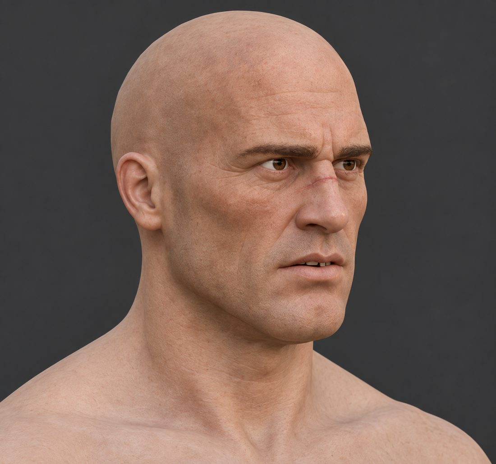
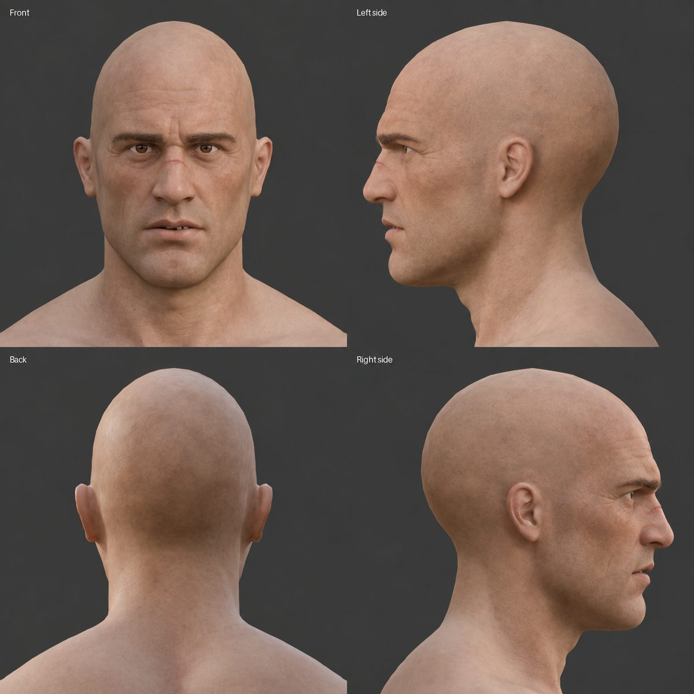
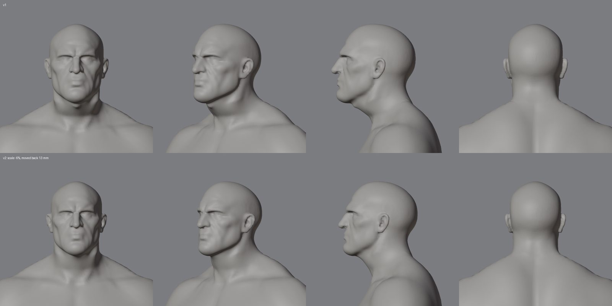
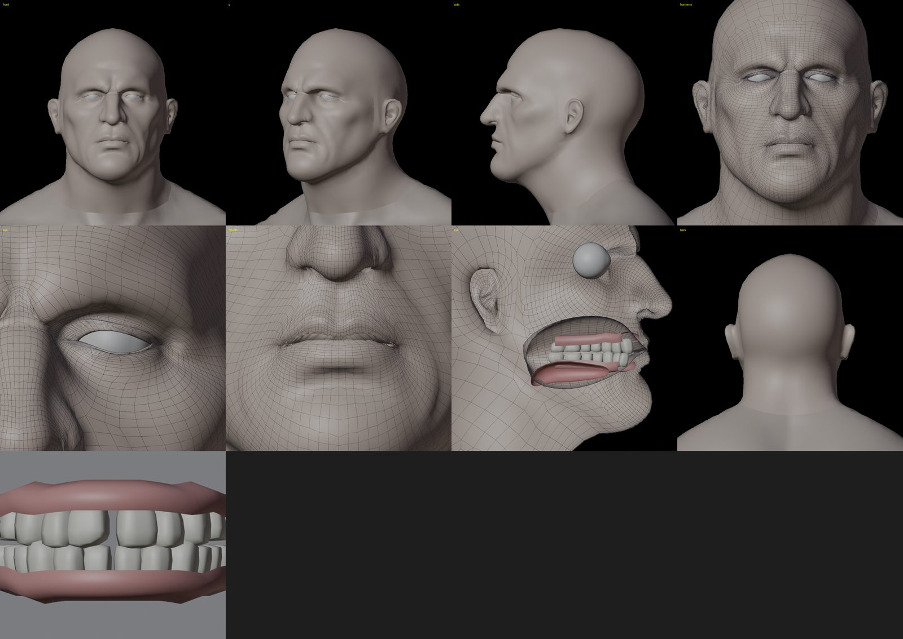
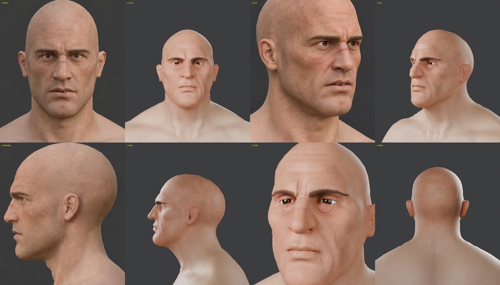
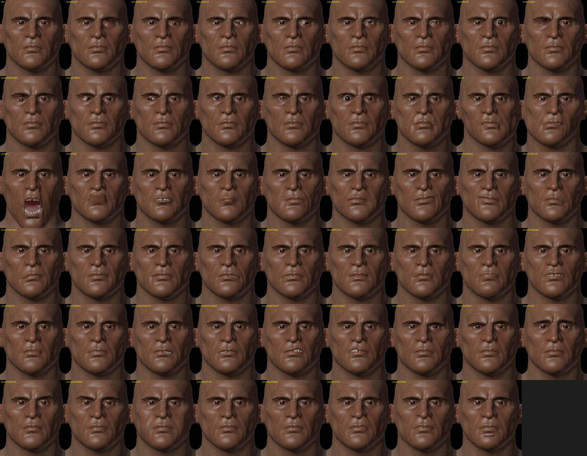
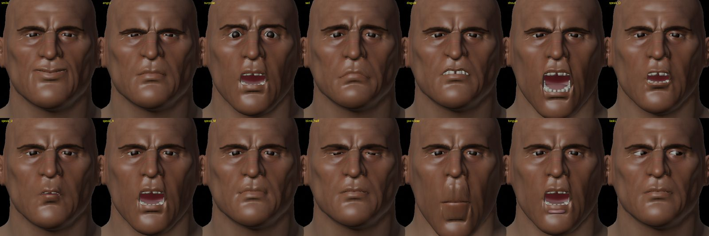
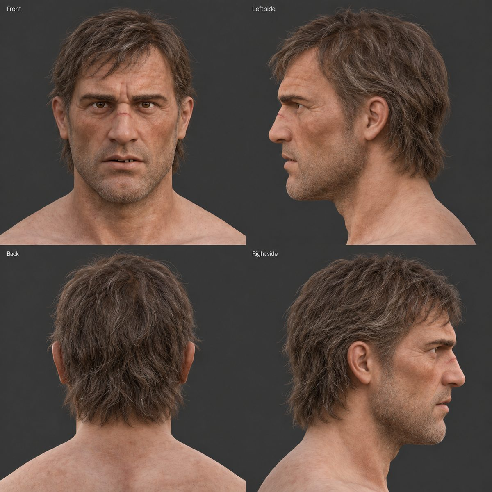
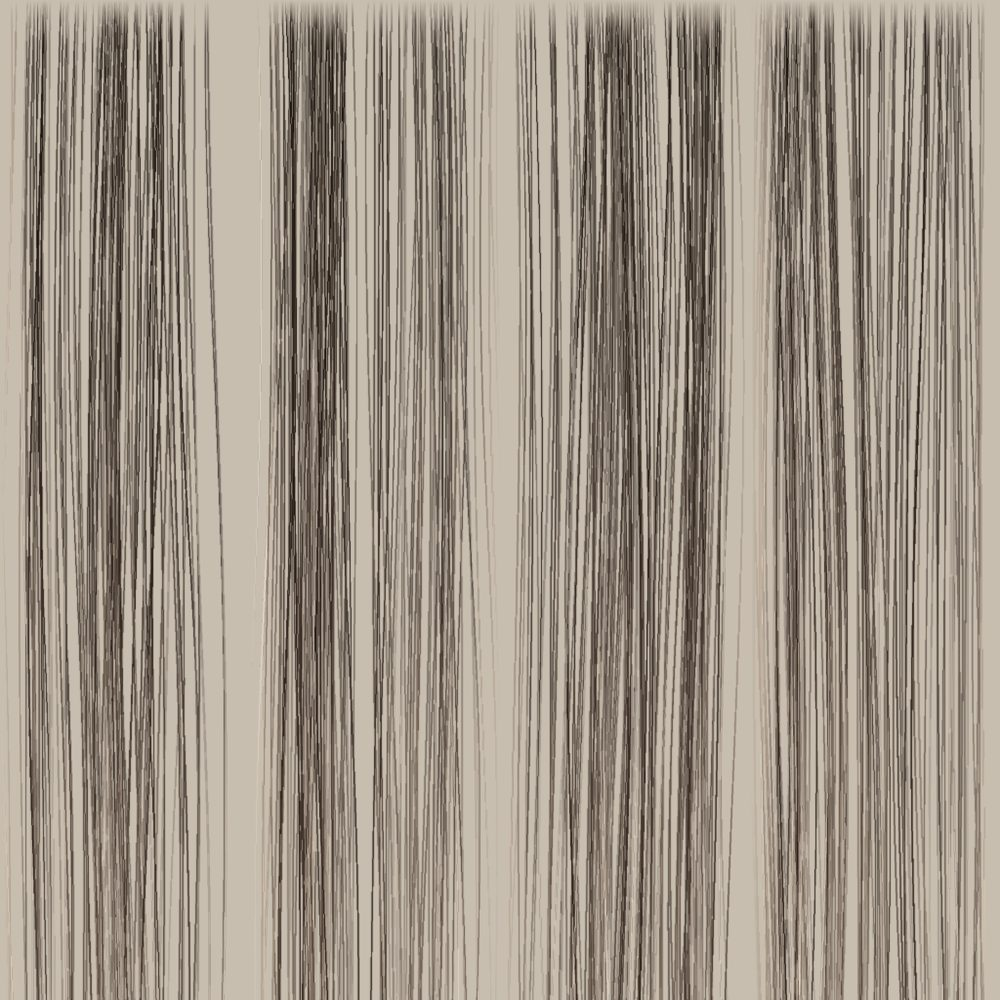
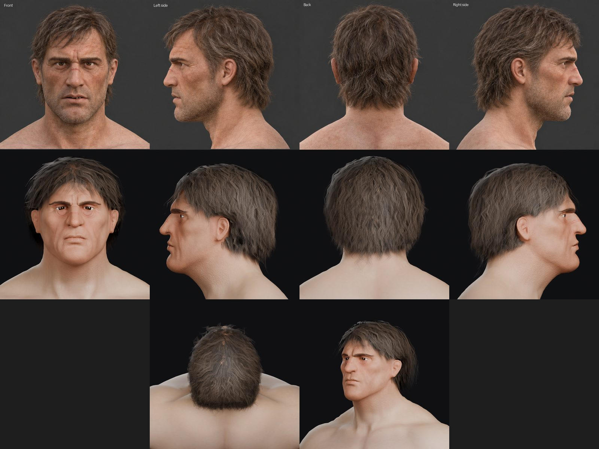

Overview
One reference image goes in. A game-ready head comes out: fitted to the shared body, rebuilt with animation topology, textured at 4K, rigged with 52 facial shapes, and wearing a hairstyle that can be swapped onto any other head.
Episode 1 follows Cynan, captain of the garrison, through the two repeatable skills that build every KnightZ character head: /newhead (8 steps) and /newhair (6 steps). Claude runs the steps in Blender and in a cloud Python workspace. Each step saves a versioned file and a review render, and nothing moves forward until the owner approves it.
This page expands on the video with the numbers, settings, tools and fixes behind each step, so you can follow the same process on your own characters.
Chapters
Click a chapter to jump the player to that point.
Software and tools used
| Tool | Version / type | What it did in this episode |
|---|---|---|
| Claude | Claude desktop app, Opus model | Ran every pipeline step, wrote and ran the scripts, rendered review sheets, kept the build records |
| Blender | 5.2 | Master scene, QuadriFlow remesh, shape keys, rig, final asset files |
| Blender MCP | Local MCP server | Lets Claude drive the open Blender session: run Python, read objects, save files |
| Cloud Python workspace | Python 3 with numpy, scipy, trimesh, fast_simplification, Pillow | Heavy geometry work: solidify, ICP fit, seam band, masks, visual hull, hair growth |
| bpy (headless Blender) | pip wheel 5.2.2 | Cycles and Workbench renders in the cloud for review sheets and the episode frames |
| Trellis.2 | Image-to-3D generator | Turned the portrait into a textured 3D bust. Pixal3d, stable-fast-3d and Hunyuan3D were also tested on earlier heads |
| AI image generator | Text-to-image | Three-quarter portrait, bald four-view head sheet, four-view hair sheet |
| MakeHuman hm08 head | CC0 template mesh | Animation-ready edge loops wrapped over the AI shape |
| Apple ARKit naming | 52 blendshape standard | Shape key names, so phone face capture and Unreal Live Link can drive the face |
| Filmora | Video editor | Edited the episode from the 44 rendered frames and narration |
Everything runs on one desktop: RTX 5090 (32 GB), Intel Core Ultra 9 285K, 64 GB DDR5. Episode 2 covers the full hardware and software list.
Two skills: /newhead and /newhair
A skill is a saved set of instructions Claude loads on demand. Instead of pasting a page of steps into every session, you type one line. Both skills follow the same pattern:
- Load context first. Read the playbook, the "Don't" list of rejected attempts, and the script docs from the project, then rebuild the scripts in the cloud workspace.
- Ask once, only for what is missing. Character name, which base body, special notes such as scars or baldness.
- Back up before writing. The master Blender file is copied to a
MayNeedLaterfolder before anything changes. - Version every output. Each step writes a new file name (
_v1,_v2), so any step can be reverted. - Gate on approval. Renders go to the owner at fixed points. A rejected attempt is reverted and added to the "Don't" list so it never repeats.
- Record. New methods, numbers and failed attempts go back into the project docs, so the next character starts with everything learned so far.
/newhead Cynan [attach: 3/4 portrait + bald four-view head sheet] Notes: scar across the nose bridge, chipped front tooth, keep the AI face shape. No stubble.
/newhair Cynan [attach: four-view hair reference] Style: medium shag, dark brown with grey streaks. Hair only, no stubble.
/newhead: building the head, step by step
01Reference
Two AI-generated images set the character. The three-quarter portrait carries the personality and the details to keep: a scar across the nose bridge, pale brown eyes and a chipped upper incisor. The bald four-view sheet (front, left, back, right) gives skin tone and proportions from every angle. It is bald on purpose, because hair is built separately.


02AI mesh (image-to-3D)
The portrait runs through image-to-3D. When several generators are available, all candidates are rendered from the front, quarter and side and ranked against the reference. For Cynan, Trellis.2 gave the best likeness: a textured bust of 208,701 vertices in under a minute.
It looks right but cannot be used as is. The surface is a dense soup of triangles with no edge flow, so it will not deform cleanly, cannot be UV-unwrapped well, and is far over a game budget. AI meshes are also thin double shells about 1 mm thick, which breaks most remesh tools. From here on the AI output is treated as a shape to match, never as final geometry.
03Seam fit to the shared neck
All male heroes share one base body, HM1. Dropped on that body, the raw bust is the wrong size, angle and position, and its shoulders clash with the body.
The fit runs as a chain of scripts:
- Solidify. Voxelize the shell at 0.5 mm, fill each slice below the neck, flood fill from outside, then marching cubes. This turns the thin shell into a closed solid (about 0.0042 m³ for Cynan).
- Decimate and remesh. Reduce to 400k, then 120k triangles, then QuadriFlow into clean quads (about 20,800 for Cynan).
- Align. ICP (iterative closest point) matches the AI skull to the HM1 head above the neck. For Cynan, free rotation tilted the chin up 17 degrees, so the pitch was fixed at -8 degrees and only scale and position were solved.
- Widen the neck so its radius matches HM1, then cut 12 mm above the seam.
- Bridge band. A ring of quads (546 for Cynan) connects the head to the 64-vertex neck ring, followed by a relax pass that removes folds. Result: 0 flipped faces, seam gap 0.0 mm.

The 64-vertex ring is the key design choice. Every head welds to exactly the same ring with zero gap, so any head fits any body built on HM1, and helmets and armour carry across characters.
04Emote topology, eyes and mouth
Even clean quads animate poorly without the right edge loops. A MakeHuman hm08 head template (CC0) is wrapped over the fitted shape using facial landmarks (eye corners, lids, mouth corners, nose, chin) and a thin-plate-spline warp. The template brings loops that follow the facial muscles. The face area is then subdivided for detail, ending at 13,014 quads.
The inside of the mouth and eyes is built too: eyeballs with lids rolled over them (6.1 mm lid opening for Cynan), upper and lower teeth, gums, tongue and a mouth bag. Cynan's chipped incisor is cut into the upper teeth with a slanted plane 2.6 mm deep.

05Reference sheet
Our clay head is rendered in the same four views as the reference. Features are then placed relative to our own eyes, ears and mouth. AI references never match our proportions exactly, so the image is never projected straight onto the model.
06Skin
The head is unwrapped first. The face UV island is scaled up 1.6 times so the area people look at gets the most texture detail. The base colour map is 4096 px.
Only tone, brow shape and eye colour come from the reference. All fine detail is generated procedurally in 3D and baked into base colour, roughness (ORM) and normal maps: pores, forehead furrows, frown lines, crow's feet, nasolabial creases and the nose scar with a raised centre. Brows are 1,400 painted strokes, dark brown with about 20 % grey. Procedural detail stays sharp at any distance and never carries lighting baked into a photo.

07Neck seam
Where the head meets the shared body there can be a crease or a colour band. Three passes hide it:
- Shape: the profile kink at the seam was 18 degrees on average (40 max). Taubin smoothing over 8 rings of vertices, 60 passes, brought it to 2.4 degrees. All 52 shape keys were rebased on the new shape.
- Normals: head seam normals copied from the body (they differed by up to 11 degrees), so lighting is continuous.
- Colour: a 16 mm band above the seam blended into the body tone. Maximum colour difference across the seam: 3.1 out of 255.
08Face rig
A jaw bone, two eye bones and the 52 ARKit shape keys, named exactly to Apple's standard, so the face can be driven by phone face capture or keyed by hand in Unreal. Teeth, lower gums and tongue follow the jaw; the lids partly follow the eye bones. The keys stack into full expressions.


/newhair: building the hairstyle, step by step
Hair is its own skill and its own object, so any style can be moved to any head. It is built as hair cards: thin strips with a strand texture and transparency.
01Hair reference
A four-view hair sheet from the image tool: a medium shag, dark brown with grey streaks. Same four views as the head sheet.

02Masks and camera fit
Each view is split into background, skin and hair using colour and local texture variance. Hair is fine and noisy; skin is smooth and more saturated. That difference finds the hairline. Only hair regions that reach the top 30 % of the panel are kept, which drops shoulders and stubble.
A camera fit then scales and shifts our clay render until its outline matches each reference silhouette. For Cynan all four views agreed on a shared scale of 0.83, with a silhouette error of 0.5 to 2 %. From that point every reference pixel maps to a point on our head.
03Visual hull
With four matched silhouettes, the volume all four views agree on is carved out. Subtract the head and what remains is where hair lives and how thick it is at each point on the scalp. A minimum thickness of 8 mm stops thin spots at the back from going bald.
04Strand atlas
Most of the look comes from one 2048 px texture: 8 columns of fine, clumped strands, 90 to 120 strands per column, painted procedurally with colours sampled from the reference hair, including the grey streaks. Roots are darkened over the first 45 % of each strand.

05Hair cards
Roots are scattered over the scalp with Poisson spacing (9.5 mm), in four layers at different heights. Each strand grows along a flow field: swept back, pulled down by gravity, a fringe across the forehead (45 % of the front roots) with a ragged stop line, and stop rules around the ears. Strands end at heights set per angle around the head. Cynan's hair is 10,991 quads (21,982 triangles), inside the budget for short hair at the time.
06Final check against the reference
The atlas goes on the cards and the hair is rendered through the same four cameras, side by side with the reference. That comparison is the approval gate.

Approval gates and versioned files
| Gate | What the owner sees | Possible answers |
|---|---|---|
| After the seam fit | Front, side and back renders on the body | Approve, or list what is off (for Cynan: too far forward, scale down) |
| After emote topology | Wireframe sheet: face, eye loops, mouth loops, cutaway | Approve or edit |
| After skin | Cycles close-ups beside reference crops | Approve or list fixes |
| After hair | Four views plus ear close-ups beside the reference | Approve, edit, or revert to the last version |
| After the face rig | Expression contact sheet | Approve |
Every step writes a new file name (for example Cynan_fit_v1, then Cynan_fit_v2), and the master scene is backed up before each write. A rejected step is reverted from its file, and the attempt is written to the "Don't" list in the playbook.
Prompts and feedback used
The skills carry most of the instructions, so the prompts in this build were short. These are the inputs that moved Cynan forward, condensed from the session records.
The brow, nose, ears, chin and Adam's apple sit too far forward. Scale the head down. The neck angle looks wrong.
Smooth the neck seam.
Rig head and hair.
Full body pass.
What we learned
- AI gives the shape; you build the structure. Image-to-3D gives a likeness in a minute. Topology, UVs, rig and seams still have to be built.
- One shared seam makes everything modular. The 64-vertex ring is why heads, hair, helmets and bodies can be mixed.
- Measure against your own model. Place features relative to your head, never by projecting the reference image.
- Procedural detail beats sampled detail. Take tone and colour from the reference; generate pores, lines and scars in 3D.
- Every fix becomes a rule. The ear-position rule, the seam fade distances and the shape-key reset all came from Cynan and now apply to every head.
Try it yourself: checklist
- Pick one shared base body and lock its neck ring vertex count before building heads.
- Generate a portrait and a bald four-view sheet with consistent views and lighting.
- Run two or more image-to-3D tools and rank them against the portrait.
- Solidify the AI shell before remeshing; thin shells break remesh tools.
- Fit with scale and position first; fix the pitch if free rotation tilts the head.
- Wrap a template head (MakeHuman CC0) for animation loops.
- Bake procedural detail into colour, roughness and normal maps at 4K.
- Name shape keys to the ARKit standard if you want phone capture.
- Version every file and keep a written list of attempts that failed.
Glossary
| Term | Meaning |
|---|---|
| Image-to-3D | An AI model that turns a picture into a textured 3D mesh |
| Topology | How the polygons of a mesh are laid out; good topology follows muscles so faces deform cleanly |
| ICP | Iterative closest point: an algorithm that aligns one shape to another by repeated matching |
| QuadriFlow | A remesher built into Blender that converts triangles into evenly sized quads |
| UV island | A flattened piece of the mesh that a texture is painted onto |
| ORM map | One texture holding ambient occlusion, roughness and metalness in its three channels |
| Shape key / morph | A stored version of the mesh, blended in to make an expression |
| ARKit 52 | Apple's standard set of 52 facial shapes used by phone face capture |
| Visual hull | The 3D volume consistent with several 2D silhouettes |
| Hair card | A flat strip with a strand texture and transparency, the standard way to draw game hair |
Episode narration
Show the narration (condensed)
IntroWelcome to KSUIE_Gaming. We are building KnightZ, a 3D action adventure game, and this channel follows the AI pipeline we use to make it. In this first episode we take one character, Cynan, captain of the garrison, from a single reference image to a game-ready head with skin, hair and a face rig.
OverviewThe work is split into two repeatable skills. Newhead builds the head. The first four steps take us from a reference image to an AI mesh, fit it to our base body, and rebuild it with topology that can animate. The next four steps finish the head: a reference sheet to line up features, the skin textures, the neck seam blend, and the face rig. Newhair builds a swappable hairstyle on top: the hair sheet, masks and camera fit, the visual hull, the strand atlas, then the hair cards and a check against the reference. Every step ends with a saved, versioned file and a review render, and nothing moves forward until I approve it.
ReferenceEverything starts with a reference. For Cynan I generated a three-quarter portrait and a bald four-view sheet: front, both sides and back. The portrait carries the details we want to keep: the scar across the nose bridge, pale brown eyes and a chipped front tooth.
AI meshThe portrait goes through image-to-3D. I run several generators and rank them against the reference; for Cynan, Trellis.2 gave the best likeness. In under a minute we have a textured bust with 208,701 vertices. Up close it is a dense soup of triangles with no edge flow.
Seam fitOur characters share one base body, HM1. We solidify the AI shell, remesh it into clean quads, and fit it to the base head with a scale and position solve. The key is a ring of 64 vertices around the neck. Every head welds to exactly the same ring with a gap of zero.
Emote topologyWe wrap a MakeHuman head template over the shape. It brings proper edge loops, then the face area is subdivided for detail. This head lands at 13,014 quads. Inside, we build eyeballs with lids, teeth, gums, a tongue and a mouth bag. Cynan's chipped incisor is modeled into the upper teeth.
Reference sheet and skinWe render our own clay head in the same four views as the reference and place features relative to our own eyes, ears and mouth. The face island is scaled up 1.6 times and the base colour map is 4K. Tone, brow shape and eye colour come from the reference. Pores, wrinkles, crow's feet and the nose scar are generated procedurally in 3D and baked into colour, roughness and normal maps.
Neck seam and face rigWe smooth the shape across the seam, match the normals, and blend the head colour into the body tone so the join disappears. Then a jaw bone, two eye bones and the 52 ARKit facial shape keys, named to Apple's standard.
HairEach view is split into background, skin and hair. A camera fit matches our head outline to the reference silhouette. With four matched silhouettes we carve the visual hull. The strand atlas holds eight columns of clumped strands. Roots are scattered over the scalp and each strand follows a flow field. Cynan's hair is 10,991 quads.
OutroThis is Cynan: AI mesh, fitted to our body, animation topology, procedural skin, a 52-key face rig and swappable hair. Because every head shares the same neck seam, this body can wear any of them.